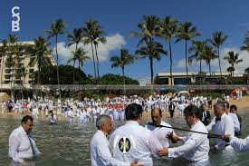
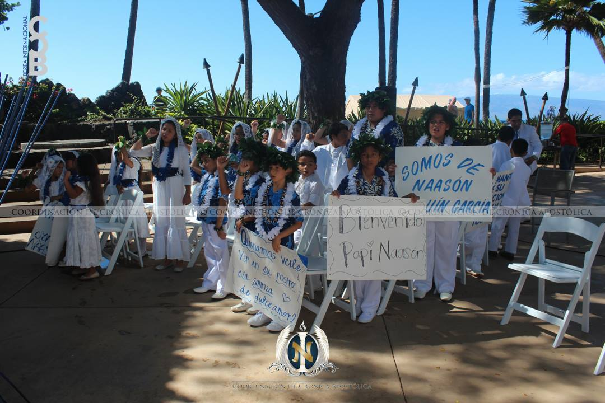
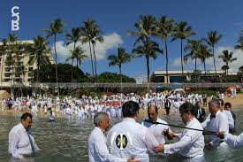
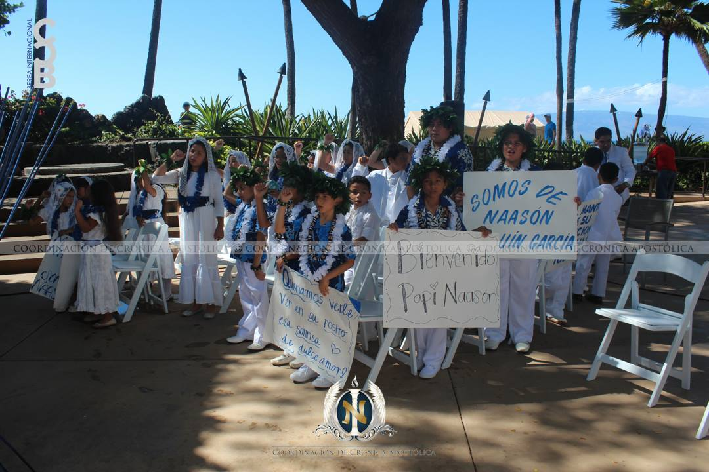

Etapa 5
The Apostle of Jesus Christ, Naasón Joaquín García, departed shortly after 8:38 AM (local time) heading to Los Angeles International Airport. Meanwhile, at the temple, the brethren joined in fervent prayer, asking God to guide the Anointed of the Lord safely.
Melbourne, Australia: January 17, 2016
Theme: Strengthening the Faith--
*The Apostle of the Lord shared his desire to convey a message of comfort, love, and edification to the brethren in Melbourne.
*He began his address by citing a phrase from the start of his ministry: "You were not alone."
*He emphasized that this phrase should be inscribed in the hearts and minds of the brethren.
*The purpose of this reminder is to encourage them to remember it during times of trial or affliction.
*He assured that God did not abandon His children adrift; instead, He raised another Apostle among His People.
"Faith is the certainty of things; it is the conviction of what we believe, that even though we do not see it, we know it
is there, we know it exists, we know that is faith. And that faith, God placed in your heart so that through it you may live with joy.
You do not live in sadness or without hope; on the contrary, I know you believe in God, I know you believe in Christ,
I know you believe in His promises, I know you believe in hope. He promised to one day grant us an inheritance. How do you believe it if
you have not seen it materially? Through that faith that Christ placed in our hearts."(Apostle of Jesus Christ, Naasón Joaquín García)


Sydney, Australia: January 24, 2016
*The Church of the Living God, Pillar and Ground of the Truth in Sydney, Australia, had the blessing of receiving the Apostle of Jesus Christ, Naasón Joaquín García.
*This visit fulfilled the promise he made to visit these regions, driven by the desire God placed in his heart.
*Upon hearing this announcement, the brethren in these areas began preparing for this significant day.
*The Apostle of Jesus Christ's presentation took place in one of the halls of the most iconic building in the city, the **Sydney Opera House**, located in Sydney Harbour.
*The Sydney Opera House is internationally renowned as a symbol of culture and art and has hosted world-famous events. Its architectural style has also earned global recognition.
*Upon the arrival of the Apostle of the Lord, the Church in the region expressed great joy and celebration.
*Brethren, workers, and ministers showed their heartfelt recognition of the election from God that lives in their hearts.
*The Apostle of Jesus Christ delivered a message to all the brethren in these regions, as well as to the Universal Church, which connected via the internet to hear the voice of God through His Anointed.
-Watch here.

Honolulu, Hawaii: February 8, 2016
Theme: Baptism--
*Baptism is for the salvation of the soul.
*To fulfill baptism, we must believe and go to repentance (Acts 8:36-37 / Acts 2:38).
*The one who is baptized must be immersed in water and with the authority of the Lord (Romans 10:13-15).
-Watch here.
 



Maui, Hawaii: February 14, 2016
Theme: Effects of Baptism--
*On February 14th, on the island of Maui, Hawaii, the Apostle of Jesus Christ, Naasón Joaquín García, concluded the International Baptism Ceremony.
*He fulfilled his promise: "There is still Light missing in the World; we will take it."
*The Church celebrated this historic event with spiritual joy.
*Members witnessed the fulfillment of the second divine promise given to the Apostle on December 8th.
*After Sunday School, the Apostle led the congregation to the beach.
*He performed the sacred act of baptism, marking a day of blessings and joy for the Lord's people.
*It was a memorable day of faith, unity, and spiritual renewal.
"This makes us heirs and co-heirs because we will not only inherit from God, but Christ shares
with us what was uniquely inherited by Him from God... Jesus Christ shares with us, makes us co-heirs,
and allows us to partake in that blessing and glory that was meant solely for Him. All of us who were called,
all who descended into the baptismal waters, all without exception—if
God brought you into His people, it is because He wanted to make you His child."(Apostle of Jesus Christ, Naasón Joaquín García)
-Watch here.